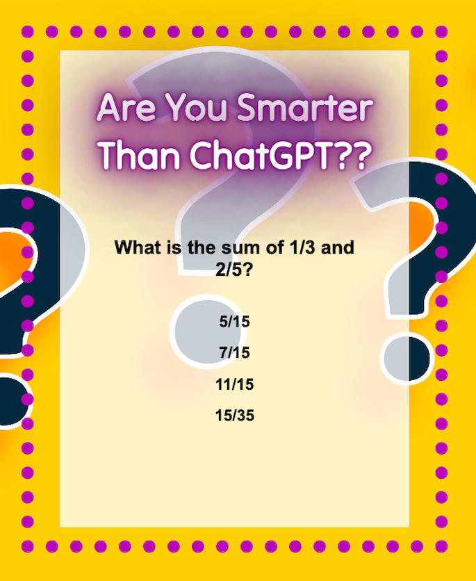
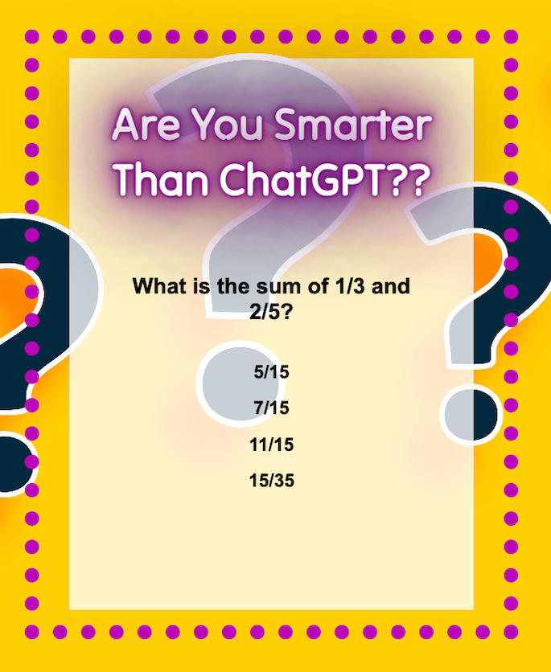

About Me
I'm a Software Engineer Intern at Adobe with a proficiency in front-end technologies like HTML5, CSS3, and JavaScript, as well as back-end languages such as Java, C++, and Python. Currently, I'm furthering my education by pursuing a Bachelor of Science in Computer Science at Southern New Hampshire University. Previously, I completed the Software Engineering Immersive program at General Assembly and a 32-hour Front End Web Development program at VetsInTech Academy.
I hold a plethora of industry certifications, such as CompTIA A+, (ISC)² Certified in Cybersecurity (CC), Scrum.org Professional Scrum Master I (PSM I), and ITIL 4 Foundation. These credentials affirm my commitment to professional growth and mastery of the tools and methodologies needed for efficient software development.
In my recent internship, I've gained hands-on experience in automating performance reporting through Power BI and MySQL databases, contributing to significant operational efficiencies. My toolkit includes Git, VSCode, and Chrome DevTools, among others. Passionate about tech-driven problem-solving, I'm always eager to learn about new trends and tools in the field. I excel in team collaborations, striving to exceed both client and project expectations.
Beyond the tech sphere, I have a rich background in medical records auditing, staff training on data entry protocols, and full-scale implementation of laboratory information systems. Also fluent in Brazilian Portuguese, I have managed both domestic and international transactions, adding a versatile linguistic and cultural dimension to my profile.
 
